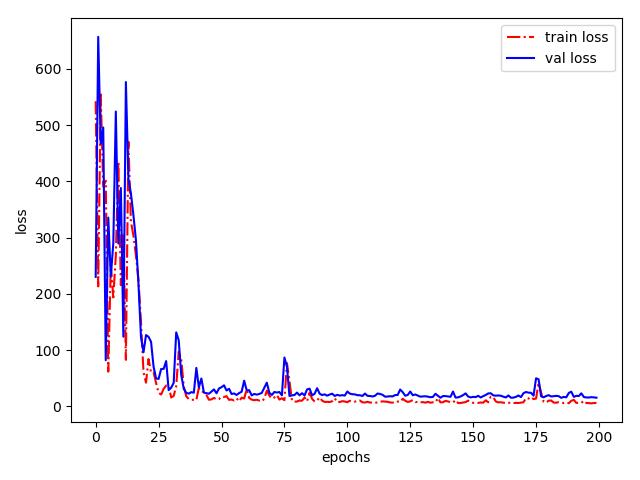
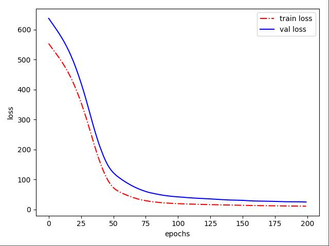

<!DOCTYPE html>
<html lang="zh" class="loading">
<head><meta name="generator" content="Hexo 3.9.0">
    <meta charset="UTF-8">
    <meta http-equiv="X-UA-Compatible" content="IE=edge,chrome=1">
    <meta name="viewport" content="width=device-width, minimum-scale=1.0, maximum-scale=1.0, user-scalable=no">
    <title>Keras入门笔记(一)-从二分类问题到多分类问题、图像识别问题 - WhiteRobe&#39;s Blog</title>
    <meta name="apple-mobile-web-app-capable" content="yes">
    <meta name="apple-mobile-web-app-status-bar-style" content="black-translucent">
    <meta name="google" content="notranslate">
    <link href="https://cdnjs.cloudflare.com/ajax/libs/KaTeX/0.11.0/katex.min.css" rel="stylesheet">
    <meta name="keywords" content="WhiteRobe, Blog,"> 
    <meta name="description" content="着眼实例，从最简单的开始；你觉得再简单不过的东西，或许在别人眼里那就是悬崖。而我，愿作那攀岩绳。,
Keras是一个Python深度学习框架，是个高层的API库。它不同于TensorFlow、PyTorch等微分器，Keras高度封装了底层的微分计算等操作，提供了用户友好的API，并且支持在Te,"> 
    <meta name="author" content="WhiteRobe"> 
    <link rel="alternative" href="atom.xml" title="WhiteRobe&#39;s Blog" type="application/atom+xml"> 
    <link rel="icon" href="/img/favicon.png"> 
    <link rel="stylesheet" href="//cdn.jsdelivr.net/npm/gitalk@1/dist/gitalk.css">
    <link rel="stylesheet" href="/css/animate.css">
    <link rel="stylesheet" href="/css/fira_code.css">
    <link rel="stylesheet" href="/css/diaspora.css">
    <script async src="https://busuanzi.ibruce.info/busuanzi/2.3/busuanzi.pure.mini.js"></script>
    
        <!--站内搜索API-->
        <script src="https://cdn.jsdelivr.net/algoliasearch/3/algoliasearch.min.js"></script>
        <link rel="stylesheet" href="https://cdn.jsdelivr.net/npm/instantsearch.css@7.3.1/themes/algolia-min.css" integrity="sha256-HB49n/BZjuqiCtQQf49OdZn63XuKFaxcIHWf0HNKte8=" crossorigin="anonymous">
        <script src="https://cdn.jsdelivr.net/npm/instantsearch.js@3.4.0/dist/instantsearch.production.min.js" integrity="sha256-pM0n88cBFRHpSn0N26ETsQdwpA7WAXJDvkHeCLh3ujI=" crossorigin="anonymous"></script>
    
    <!-- <script async src="//pagead2.googlesyndication.com/pagead/js/adsbygoogle.js"></script>
    <script>
          // No more ads!
         (adsbygoogle = window.adsbygoogle || []).push({
              google_ad_client: "ca-pub-8691406134231910",
              enable_page_level_ads: true
         });
    </script>
    <script async custom-element="amp-auto-ads"
        src="https://cdn.ampproject.org/v0/amp-auto-ads-0.1.js">
    </script> -->
</head>
</html>
<body class="loading">
    <span id="config-title" style="display:none">WhiteRobe&#39;s Blog</span>
    <div id="loader"></div>
    <div id="single">
    <div id="top" style="display: block; display: block;position: fixed; top: 0px;">
    <div class="bar" style="width: 0;"></div>
    <a class="icon-home image-icon" href="javascript:;" data-url="https://blog.whiterobe.top"></a>
    <div title="播放/暂停" class="icon-play"></div>
    <h3 class="subtitle">Keras入门笔记(一)-从二分类问题到多分类问题、图像识别问题</h3>
    <div class="social">
        <!--<div class="like-icon">-->
            <!--<a href="javascript:;" class="likeThis active"><span class="icon-like"></span><span class="count">76</span></a>-->
        <!--</div>-->
        <div style="font-size: 1rem;margin-right: -10px">
          分享此文：
        </div>
        <div>
          <div class="share">
              <a title="获取文章地址二维码" class="icon-scan" href="javascript:;"></a>
          </div>
          <div id="qr"></div>
        </div>
    </div>
    <div class="scrollbar"></div>
</div>

    <div class="section" style="margin-top: 50px">
        <div class="article">
    <div class='main'>
        <h1 class="title">Keras入门笔记(一)-从二分类问题到多分类问题、图像识别问题</h1>
        <div class="stuff">
            <span>九月 23, 2019</span>
            <span id="busuanzi_container_page_pv" class="busuanzi_page" style="display:none">本文总阅读量<div id="busuanzi_value_page_pv" style="display: inline;">1</div>次</span>
            
  <ul class="post-tags-list"><li class="post-tags-list-item"><a class="post-tags-list-link" href="/tags/Keras/">Keras</a></li><li class="post-tags-list-item"><a class="post-tags-list-link" href="/tags/学习笔记/">学习笔记</a></li><li class="post-tags-list-item"><a class="post-tags-list-link" href="/tags/深度学习/">深度学习</a></li></ul>


        </div>
        <div class="low-resolution-warn-info">当前设备屏幕尺寸过小，推荐使用PC模式浏览。</div>
        <div class="content markdown">
            <blockquote>
<p><a href="https://keras.io/" target="_blank" rel="noopener">Keras</a>是一个Python深度学习框架，是个高层的API库。它不同于TensorFlow、PyTorch等微分器，Keras高度封装了底层的微分计算等操作，提供了用户友好的API，并且支持在TensorFlow、Theano和CNTK这三个底层微分库之间切换。目前，Keras已被钦定为TensorFlow的用户接口，其地位相当于TorchVision之于PyTorch</p>
<ul>
<li>本文主要基于Keras<sup>2</sup>作介绍。</li>
<li>为了更好的阅读体验，可以<a href="./Keras%E5%85%A5%E9%97%A8%E7%AC%94%E8%AE%B0(%E4%B8%80)-%E4%BB%8E%E4%BA%8C%E5%88%86%E7%B1%BB%E9%97%AE%E9%A2%98%E5%88%B0%E5%A4%9A%E5%88%86%E7%B1%BB%E9%97%AE%E9%A2%98.html">点此切换</a>夜间模式。</li>
</ul>
</blockquote>
<h2 id="keras的结构"><a class="markdownIt-Anchor" href="#keras的结构"></a> Keras的结构</h2>
<p>Keras中我们</p>
<ul>
<li><code>utils</code></li>
<li><code>activations</code>：提供了常见的激活函数，如relu等。</li>
<li><code>applications</code>：</li>
<li><code>backend</code>：提供了TensorFlow、Theano和CNTK的底层接口。</li>
<li><code>datasets</code>：提供了一些常用的小数据集，用于上手。</li>
<li><code>engine</code></li>
<li><code>layers</code>：提供了常见的网络结构层，是Keras最重要的包。</li>
<li><code>preprocessing</code>：数据预处理模块，也提供了数据增强的常用包。</li>
<li><code>wrappers</code></li>
<li><code>callbacks</code></li>
<li><code>constraints</code></li>
<li><code>initializers</code>：提供了参数初始化的方法。</li>
<li><code>metrics</code></li>
<li><code>models</code>：模型是Keras对网络层、优化器等结构的组织模块。</li>
<li><code>losses</code>：提供了常见的损失函数/目标函数，如Mean-Squared-Error等。</li>
<li><code>optimizers</code>： 优化器，包含了一些优化的方法。</li>
<li><code>regularizers</code>：提供了一系列正则器。</li>
</ul>
<h2 id="keras的常见结构"><a class="markdownIt-Anchor" href="#keras的常见结构"></a> Keras的常见结构</h2>
<p><strong>① 模型</strong></p>
<p>Keras的核心数据结构是“模型”，模型指的是对网络层的组织方式。目前，Keras的模型只有两种形式：</p>
<ol>
<li>Sequential</li>
<li>Functional</li>
</ol>
<figure class="highlight python"><table><tr><td class="gutter"><pre><span class="line">1</span><br><span class="line">2</span><br></pre></td><td class="code"><pre><span class="line"><span class="keyword">from</span> keras.models <span class="keyword">import</span> Sequential</span><br><span class="line">network = Sequential()</span><br></pre></td></tr></table></figure>
<p>就构建了一个序列模型，接下下来就是不断往这个网络结构中添加不同的网络层并构建它们的连接次序。</p>
<p><strong>② 网络层</strong></p>
<p>网络层由<code>keras.layers</code>进行定义：</p>
<figure class="highlight python"><table><tr><td class="gutter"><pre><span class="line">1</span><br></pre></td><td class="code"><pre><span class="line"><span class="keyword">from</span> keras.layers <span class="keyword">import</span> Dense</span><br></pre></td></tr></table></figure>
<p>就引入了一个全连接层，接着我们无返回地把它添加到网络结构中：</p>
<figure class="highlight python"><table><tr><td class="gutter"><pre><span class="line">1</span><br><span class="line">2</span><br></pre></td><td class="code"><pre><span class="line">network.add(Dense(units=<span class="number">512</span>, activation=<span class="string">'relu'</span>, inputshap=(<span class="number">1024</span>, )))</span><br><span class="line">network.add(Dense(units=<span class="number">10</span>, activation=<span class="string">'softmax'</span>))</span><br></pre></td></tr></table></figure>
<p>就为网路结构添加了一个512个神经元的全链接层和10个神经元的输出层。</p>
<blockquote>
<p>注意到：只有第一层需要指定输入数据的尺寸；此后的每一层将会自动进行推导。</p>
</blockquote>
<p><strong>③ 模型编译</strong>和训练</p>
<p>现在我们要指定模型的训练方式，我们需要重点关心的有：</p>
<ol>
<li><code>optimizer</code>：优化器，可能会影响到模型的收敛速度</li>
<li><code>loss</code>：模型的目标函数/损失函数</li>
<li><code>metrics</code>：指标列表，训练时将会根据该列表记录训练效果的衡量值</li>
<li><code>epochs</code>、<code>batch_size</code>：训练的轮次和梯度下降时每个batch将包含的样本数。</li>
<li><code>verbose</code>：控制台日志，值为<code>0|1|2</code>——分别对应”不在控制台输出任何消息“、“训练每轮训练进度”、“仅输出训练轮的信息”</li>
<li><code>validation_data</code>、<code>validation_split</code>：验证集或自动划分验证集的比例。</li>
</ol>
<p>我们调用<code>model.compile</code>方法进行编译：</p>
<figure class="highlight plain"><table><tr><td class="gutter"><pre><span class="line">1</span><br></pre></td><td class="code"><pre><span class="line">network.compile(optimizer=&apos;adam&apos;, loss=&apos;categorical_crossentropy&apos;, metrics=[&apos;accuracy&apos;])</span><br></pre></td></tr></table></figure>
<p>随后，再对编译完毕的模型进行训练：</p>
<figure class="highlight py"><table><tr><td class="gutter"><pre><span class="line">1</span><br></pre></td><td class="code"><pre><span class="line">network.fit(train_data, train_labels, epochs=<span class="number">10</span>, batch_size=<span class="number">1024</span>, validation_split=<span class="number">0.3</span>, verbose=<span class="number">2</span>)</span><br></pre></td></tr></table></figure>
<h2 id="二分类问题电影评论分类"><a class="markdownIt-Anchor" href="#二分类问题电影评论分类"></a> 二分类问题：电影评论分类</h2>
<p>二分类问题可能是应用最广泛的机器学习问题。我们可以利用Keras自带的IMDB数据集进行初步上手练习。</p>
<p>IMDB 数据集它包含来自互联网电影数据库（IMDB）的 50 000 条严重两极分化的评论。数据集被分为用于训练的 25 000 条评论与用于测试的 25 000 条评论，训练集和测试集都包含 50% 的正面评论和 50% 的负面评论。</p>
<blockquote>
<ul>
<li><code>imdb_data</code> 是由评论词组成的索引列表，其前三位为保留值，即真正的评论词索引从序数 <span class="katex"><span class="katex-mathml"><math><semantics><mrow><mn>3</mn></mrow><annotation encoding="application/x-tex">3</annotation></semantics></math></span><span class="katex-html" aria-hidden="true"><span class="base"><span class="strut" style="height:0.64444em;vertical-align:0em;"></span><span class="mord">3</span></span></span></span> 开始。</li>
<li><code>imdb_label</code> 是由 <code>0|1</code> 组成的二值化评价。</li>
</ul>
</blockquote>
<figure class="highlight python"><table><tr><td class="gutter"><pre><span class="line">1</span><br><span class="line">2</span><br><span class="line">3</span><br><span class="line">4</span><br><span class="line">5</span><br><span class="line">6</span><br><span class="line">7</span><br><span class="line">8</span><br><span class="line">9</span><br><span class="line">10</span><br><span class="line">11</span><br><span class="line">12</span><br><span class="line">13</span><br><span class="line">14</span><br><span class="line">15</span><br><span class="line">16</span><br><span class="line">17</span><br><span class="line">18</span><br><span class="line">19</span><br><span class="line">20</span><br><span class="line">21</span><br><span class="line">22</span><br><span class="line">23</span><br><span class="line">24</span><br><span class="line">25</span><br><span class="line">26</span><br><span class="line">27</span><br><span class="line">28</span><br><span class="line">29</span><br><span class="line">30</span><br><span class="line">31</span><br><span class="line">32</span><br><span class="line">33</span><br><span class="line">34</span><br><span class="line">35</span><br><span class="line">36</span><br><span class="line">37</span><br><span class="line">38</span><br><span class="line">39</span><br><span class="line">40</span><br><span class="line">41</span><br><span class="line">42</span><br><span class="line">43</span><br><span class="line">44</span><br><span class="line">45</span><br><span class="line">46</span><br><span class="line">47</span><br><span class="line">48</span><br><span class="line">49</span><br><span class="line">50</span><br><span class="line">51</span><br><span class="line">52</span><br><span class="line">53</span><br><span class="line">54</span><br><span class="line">55</span><br><span class="line">56</span><br><span class="line">57</span><br><span class="line">58</span><br><span class="line">59</span><br></pre></td><td class="code"><pre><span class="line"><span class="keyword">from</span> keras.datasets <span class="keyword">import</span> imdb</span><br><span class="line"><span class="keyword">from</span> keras.layers <span class="keyword">import</span> Dense</span><br><span class="line"><span class="keyword">from</span> keras.models <span class="keyword">import</span> Sequential</span><br><span class="line"><span class="keyword">import</span> numpy <span class="keyword">as</span> np</span><br><span class="line"><span class="keyword">import</span> matplotlib.pyplot <span class="keyword">as</span> plt</span><br><span class="line"></span><br><span class="line"></span><br><span class="line"><span class="function"><span class="keyword">def</span> <span class="title">ont_hot</span><span class="params">(data_mat, dim)</span>:</span></span><br><span class="line">    <span class="string">"""</span></span><br><span class="line"><span class="string">    对一个矩阵进行独热编码</span></span><br><span class="line"><span class="string">    :param data_mat: 数据矩阵</span></span><br><span class="line"><span class="string">    :param dim: 独热编码的维度</span></span><br><span class="line"><span class="string">    :return: 返回独热编码后的数据矩阵</span></span><br><span class="line"><span class="string">    """</span></span><br><span class="line">    res = np.zeros((len(data_mat), dim))</span><br><span class="line">    <span class="keyword">for</span> i, index <span class="keyword">in</span> enumerate(data_mat):</span><br><span class="line">        res[i][index] = <span class="number">1.0</span></span><br><span class="line">    <span class="keyword">return</span> res</span><br><span class="line"></span><br><span class="line"></span><br><span class="line"><span class="comment"># 取前10000个高频评论词汇</span></span><br><span class="line">nb_words = <span class="number">10000</span></span><br><span class="line"></span><br><span class="line">(train_data, train_labels), (test_data, test_labels) = imdb.load_data(num_words=nb_words)</span><br><span class="line"></span><br><span class="line"><span class="comment"># 对训练数据、测试数据进行独热编码和numpy向量化</span></span><br><span class="line">train_data = ont_hot(train_data, nb_words)</span><br><span class="line">test_data = ont_hot(test_data, nb_words)</span><br><span class="line">train_labels = np.asarray(train_labels).astype(<span class="string">'float32'</span>)</span><br><span class="line">test_labels = np.asarray(test_labels).astype(<span class="string">'float32'</span>)</span><br><span class="line"></span><br><span class="line">network = Sequential()</span><br><span class="line">network.add(Dense(<span class="number">16</span>, activation=<span class="string">'relu'</span>, input_shape=(nb_words,)))</span><br><span class="line">network.add(Dense(<span class="number">16</span>, activation=<span class="string">'relu'</span>, input_shape=(<span class="number">16</span>,)))</span><br><span class="line">network.add(Dense(<span class="number">1</span>, activation=<span class="string">'sigmoid'</span>))</span><br><span class="line"></span><br><span class="line">network.compile(optimizer=<span class="string">'adam'</span>, loss=<span class="string">'binary_crossentropy'</span>, metrics=[<span class="string">'accuracy'</span>])</span><br><span class="line"></span><br><span class="line">history = network.fit(train_data, train_labels, epochs=<span class="number">10</span>, batch_size=<span class="number">1024</span>, validation_split=<span class="number">0.3</span>, verbose=<span class="number">2</span>).history</span><br><span class="line"></span><br><span class="line"></span><br><span class="line"><span class="comment"># --模型的应用--</span></span><br><span class="line"></span><br><span class="line"><span class="comment"># 随机选择一项进行预测</span></span><br><span class="line">result = list(map(<span class="keyword">lambda</span> x: <span class="number">1</span> <span class="keyword">if</span> x &gt; <span class="number">0.5</span> <span class="keyword">else</span> <span class="number">0</span>, network.predict(test_data)))</span><br><span class="line">print(<span class="string">'positive'</span> <span class="keyword">if</span> result[np.random.randint(len(result))] == <span class="number">1</span> <span class="keyword">else</span> <span class="string">'negative'</span>)</span><br><span class="line"></span><br><span class="line"></span><br><span class="line"><span class="comment"># 画图，可以明显看到过拟合现象</span></span><br><span class="line">train_loss, val_loss = history[<span class="string">'loss'</span>], history[<span class="string">'val_loss'</span>]</span><br><span class="line"></span><br><span class="line">epochs = range(len(train_loss))</span><br><span class="line"></span><br><span class="line">plt.plot(epochs, train_loss, <span class="string">'bo'</span>, label=<span class="string">'train loss'</span>)</span><br><span class="line">plt.plot(epochs, val_loss, <span class="string">'b-'</span>, label=<span class="string">'val loss'</span>)</span><br><span class="line">plt.xlabel(<span class="string">'epochs'</span>)</span><br><span class="line">plt.ylabel(<span class="string">'loss'</span>)</span><br><span class="line">plt.legend()</span><br><span class="line">plt.show()</span><br></pre></td></tr></table></figure>
<h2 id="多分类问题路透社新闻评论"><a class="markdownIt-Anchor" href="#多分类问题路透社新闻评论"></a> 多分类问题：路透社新闻评论</h2>
<p>透社数据集，它包含许多短新闻及其对应的主题，由路透社在 1986 年发布。它是一个简单的、广泛使用的文本分类数据集。</p>
<p>路透社新闻数据集和IMDB数据集类似，只不过其label为 <span class="katex"><span class="katex-mathml"><math><semantics><mrow><mn>46</mn></mrow><annotation encoding="application/x-tex">46</annotation></semantics></math></span><span class="katex-html" aria-hidden="true"><span class="base"><span class="strut" style="height:0.64444em;vertical-align:0em;"></span><span class="mord">4</span><span class="mord">6</span></span></span></span> 维的输出值。</p>
<figure class="highlight python"><table><tr><td class="gutter"><pre><span class="line">1</span><br><span class="line">2</span><br><span class="line">3</span><br><span class="line">4</span><br><span class="line">5</span><br><span class="line">6</span><br><span class="line">7</span><br><span class="line">8</span><br><span class="line">9</span><br><span class="line">10</span><br><span class="line">11</span><br><span class="line">12</span><br><span class="line">13</span><br><span class="line">14</span><br><span class="line">15</span><br><span class="line">16</span><br><span class="line">17</span><br><span class="line">18</span><br><span class="line">19</span><br><span class="line">20</span><br><span class="line">21</span><br><span class="line">22</span><br><span class="line">23</span><br><span class="line">24</span><br><span class="line">25</span><br><span class="line">26</span><br><span class="line">27</span><br><span class="line">28</span><br><span class="line">29</span><br><span class="line">30</span><br><span class="line">31</span><br><span class="line">32</span><br><span class="line">33</span><br><span class="line">34</span><br><span class="line">35</span><br><span class="line">36</span><br><span class="line">37</span><br><span class="line">38</span><br><span class="line">39</span><br><span class="line">40</span><br><span class="line">41</span><br><span class="line">42</span><br><span class="line">43</span><br><span class="line">44</span><br><span class="line">45</span><br><span class="line">46</span><br><span class="line">47</span><br><span class="line">48</span><br><span class="line">49</span><br><span class="line">50</span><br><span class="line">51</span><br><span class="line">52</span><br><span class="line">53</span><br><span class="line">54</span><br><span class="line">55</span><br><span class="line">56</span><br><span class="line">57</span><br><span class="line">58</span><br><span class="line">59</span><br><span class="line">60</span><br><span class="line">61</span><br></pre></td><td class="code"><pre><span class="line"><span class="keyword">from</span> keras.datasets <span class="keyword">import</span> reuters</span><br><span class="line"><span class="keyword">from</span> keras.utils <span class="keyword">import</span> to_categorical</span><br><span class="line"><span class="keyword">from</span> keras.models <span class="keyword">import</span> Sequential</span><br><span class="line"><span class="keyword">from</span> keras.layers <span class="keyword">import</span> Dense</span><br><span class="line"><span class="keyword">import</span> numpy <span class="keyword">as</span> np</span><br><span class="line"><span class="keyword">import</span> matplotlib.pyplot <span class="keyword">as</span> plt</span><br><span class="line"></span><br><span class="line"></span><br><span class="line">nb_words = <span class="number">10000</span></span><br><span class="line">(train_data, train_labels), (test_data, test_labels) = reuters.load_data(num_words=nb_words)</span><br><span class="line"></span><br><span class="line"></span><br><span class="line"><span class="function"><span class="keyword">def</span> <span class="title">ont_hot</span><span class="params">(data_mat, dim)</span>:</span></span><br><span class="line">    <span class="string">"""</span></span><br><span class="line"><span class="string">    对一个矩阵进行独热编码</span></span><br><span class="line"><span class="string">    :param data_mat: 数据矩阵</span></span><br><span class="line"><span class="string">    :param dim: 独热编码的维度</span></span><br><span class="line"><span class="string">    :return: 返回独热编码后的数据矩阵</span></span><br><span class="line"><span class="string">    """</span></span><br><span class="line">    res = np.zeros((len(data_mat), dim))</span><br><span class="line">    <span class="keyword">for</span> i, index <span class="keyword">in</span> enumerate(data_mat):</span><br><span class="line">        res[i][index] = <span class="number">1.0</span></span><br><span class="line">    <span class="keyword">return</span> res</span><br><span class="line"></span><br><span class="line"></span><br><span class="line">train_data = ont_hot(train_data, nb_words)</span><br><span class="line">test_data = ont_hot(test_data, nb_words)</span><br><span class="line"></span><br><span class="line"><span class="comment"># 采用 loss='categorical_crossentropy'</span></span><br><span class="line"><span class="comment"># train_labels = to_categorical(train_labels)</span></span><br><span class="line"><span class="comment"># test_labels = to_categorical(test_labels)</span></span><br><span class="line"></span><br><span class="line"><span class="comment"># 采用 loss='sparse_categorical_crossentropy' 只需要编译成一个numpy张量即可</span></span><br><span class="line"><span class="comment"># train_labels = np.array(train_labels)</span></span><br><span class="line"><span class="comment"># test_labels = np.array(test_labels)</span></span><br><span class="line"></span><br><span class="line"></span><br><span class="line">network = Sequential()</span><br><span class="line">network.add(Dense(<span class="number">128</span>, activation=<span class="string">'relu'</span>, input_shape=(nb_words,)))</span><br><span class="line">network.add(Dense(<span class="number">64</span>, activation=<span class="string">'relu'</span>))</span><br><span class="line">network.add(Dense(<span class="number">46</span>, activation=<span class="string">'softmax'</span>))  <span class="comment"># 与imdb数据集不同，其输出不是二分类问题</span></span><br><span class="line"></span><br><span class="line">network.compile(optimizer=<span class="string">'adam'</span>, loss=<span class="string">'sparse_categorical_crossentropy'</span>, metrics=[<span class="string">'accuracy'</span>])</span><br><span class="line"></span><br><span class="line">history = network.fit(train_data, train_labels, epochs=<span class="number">20</span>, batch_size=<span class="number">1024</span>, validation_split=<span class="number">0.3</span>, verbose=<span class="number">2</span>).history</span><br><span class="line"></span><br><span class="line"></span><br><span class="line"><span class="comment"># --模型的应用--</span></span><br><span class="line"></span><br><span class="line"></span><br><span class="line"><span class="comment"># 画图，可以明显看到过拟合现象</span></span><br><span class="line">train_loss, val_loss = history[<span class="string">'loss'</span>], history[<span class="string">'val_loss'</span>]</span><br><span class="line"></span><br><span class="line">epochs = range(len(train_loss))</span><br><span class="line"></span><br><span class="line">plt.plot(epochs, train_loss, <span class="string">'bo'</span>, label=<span class="string">'train loss'</span>)</span><br><span class="line">plt.plot(epochs, val_loss, <span class="string">'b-'</span>, label=<span class="string">'val loss'</span>)</span><br><span class="line">plt.xlabel(<span class="string">'epochs'</span>)</span><br><span class="line">plt.ylabel(<span class="string">'loss'</span>)</span><br><span class="line">plt.legend()</span><br><span class="line">plt.show()</span><br></pre></td></tr></table></figure>
<h2 id="回归问题波士顿房价"><a class="markdownIt-Anchor" href="#回归问题波士顿房价"></a> 回归问题：波士顿房价</h2>
<p>任何看过西瓜书或吴恩达视频课程的同学都不会对这个数据集感到陌生。</p>
<p>不同于上两个问题的做法，我们将在下文采用新的损失函数和评价指标。</p>
<p>首先我们将采用K折法对模型进行评价，所以我们需要多次编译模型，因此需要构建一个模块化的模型方法：<code>nn()</code>。</p>
<figure class="highlight python"><table><tr><td class="gutter"><pre><span class="line">1</span><br><span class="line">2</span><br><span class="line">3</span><br><span class="line">4</span><br><span class="line">5</span><br><span class="line">6</span><br><span class="line">7</span><br><span class="line">8</span><br><span class="line">9</span><br><span class="line">10</span><br><span class="line">11</span><br><span class="line">12</span><br><span class="line">13</span><br><span class="line">14</span><br><span class="line">15</span><br><span class="line">16</span><br><span class="line">17</span><br><span class="line">18</span><br><span class="line">19</span><br><span class="line">20</span><br><span class="line">21</span><br><span class="line">22</span><br><span class="line">23</span><br><span class="line">24</span><br><span class="line">25</span><br><span class="line">26</span><br><span class="line">27</span><br><span class="line">28</span><br><span class="line">29</span><br><span class="line">30</span><br><span class="line">31</span><br><span class="line">32</span><br><span class="line">33</span><br><span class="line">34</span><br><span class="line">35</span><br><span class="line">36</span><br><span class="line">37</span><br><span class="line">38</span><br><span class="line">39</span><br><span class="line">40</span><br><span class="line">41</span><br><span class="line">42</span><br><span class="line">43</span><br><span class="line">44</span><br><span class="line">45</span><br><span class="line">46</span><br><span class="line">47</span><br><span class="line">48</span><br><span class="line">49</span><br><span class="line">50</span><br><span class="line">51</span><br><span class="line">52</span><br><span class="line">53</span><br><span class="line">54</span><br><span class="line">55</span><br><span class="line">56</span><br><span class="line">57</span><br><span class="line">58</span><br><span class="line">59</span><br><span class="line">60</span><br><span class="line">61</span><br><span class="line">62</span><br><span class="line">63</span><br><span class="line">64</span><br><span class="line">65</span><br><span class="line">66</span><br><span class="line">67</span><br><span class="line">68</span><br><span class="line">69</span><br><span class="line">70</span><br><span class="line">71</span><br><span class="line">72</span><br><span class="line">73</span><br><span class="line">74</span><br><span class="line">75</span><br><span class="line">76</span><br></pre></td><td class="code"><pre><span class="line"><span class="keyword">from</span> keras.datasets <span class="keyword">import</span> boston_housing</span><br><span class="line"><span class="keyword">from</span> keras.models <span class="keyword">import</span> Sequential</span><br><span class="line"><span class="keyword">from</span> keras.layers <span class="keyword">import</span> Dense</span><br><span class="line"><span class="keyword">import</span> matplotlib.pyplot <span class="keyword">as</span> plt</span><br><span class="line"><span class="keyword">import</span> numpy <span class="keyword">as</span> np</span><br><span class="line"></span><br><span class="line"></span><br><span class="line"><span class="function"><span class="keyword">def</span> <span class="title">z_score</span><span class="params">(data, axis=<span class="number">0</span>)</span>:</span></span><br><span class="line">    <span class="string">"""</span></span><br><span class="line"><span class="string">    :param data: 2-D numpy - array</span></span><br><span class="line"><span class="string">    :param axis: ...</span></span><br><span class="line"><span class="string">    :return:</span></span><br><span class="line"><span class="string">    """</span></span><br><span class="line">    mean = data.mean(axis=axis)</span><br><span class="line">    std = data.std(axis=axis)</span><br><span class="line">    <span class="keyword">return</span> (data - mean) / std</span><br><span class="line"></span><br><span class="line"></span><br><span class="line"><span class="function"><span class="keyword">def</span> <span class="title">nn</span><span class="params">(data_shape)</span>:</span></span><br><span class="line">    <span class="string">"""</span></span><br><span class="line"><span class="string">    :param data_shape: (size of samples, num of features)</span></span><br><span class="line"><span class="string">    :return:</span></span><br><span class="line"><span class="string">    """</span></span><br><span class="line">    k_model = Sequential()</span><br><span class="line">    k_model.add(Dense(<span class="number">64</span>, activation=<span class="string">'relu'</span>, input_shape=(data_shape[<span class="number">1</span>],)))</span><br><span class="line">    k_model.add(Dense(<span class="number">32</span>, activation=<span class="string">'relu'</span>))</span><br><span class="line">    k_model.add(Dense(<span class="number">1</span>))</span><br><span class="line">    <span class="comment"># MSE 均方误差</span></span><br><span class="line">    <span class="comment"># MAE 平均绝对误差 : 预测值与目标值之差的绝对值</span></span><br><span class="line">    k_model.compile(optimizer=<span class="string">'sgd'</span>, loss=<span class="string">'mse'</span>, metrics=[<span class="string">'mae'</span>])</span><br><span class="line"></span><br><span class="line">    <span class="keyword">return</span> k_model</span><br><span class="line"></span><br><span class="line"></span><br><span class="line">(train_data, train_targets), (test_data, test_targets) = boston_housing.load_data()</span><br><span class="line"></span><br><span class="line"><span class="comment"># 标准化</span></span><br><span class="line">train_data = z_score(train_data)</span><br><span class="line">test_data = z_score(test_data)</span><br><span class="line"></span><br><span class="line"><span class="comment"># K折法训练</span></span><br><span class="line">k = <span class="number">4</span></span><br><span class="line">histories = []</span><br><span class="line"></span><br><span class="line"><span class="keyword">for</span> i <span class="keyword">in</span> range(k):</span><br><span class="line">    network = nn(train_data.shape)</span><br><span class="line"></span><br><span class="line">    k_nums_samples = train_data.shape[<span class="number">0</span>] // k</span><br><span class="line"></span><br><span class="line">    k_val_data = train_data[i * k_nums_samples:(i + <span class="number">1</span>) * k_nums_samples]</span><br><span class="line">    k_val_targets = train_targets[i * k_nums_samples:(i + <span class="number">1</span>) * k_nums_samples]</span><br><span class="line"></span><br><span class="line">    k_train_data = \</span><br><span class="line">        np.concatenate([train_data[: i * k_nums_samples], train_data[(i + <span class="number">1</span>) * k_nums_samples:]], axis=<span class="number">0</span>)</span><br><span class="line">    k_train_targets = \</span><br><span class="line">        np.concatenate([train_targets[: i * k_nums_samples], train_targets[(i + <span class="number">1</span>) * k_nums_samples:]], axis=<span class="number">0</span>)</span><br><span class="line"></span><br><span class="line">    history = network.fit(k_val_data, k_val_targets, epochs=<span class="number">200</span>, batch_size=<span class="number">256</span>,</span><br><span class="line">                          validation_data=(k_val_data, k_val_targets), verbose=<span class="number">2</span>).history</span><br><span class="line"></span><br><span class="line">    histories.append(history[<span class="string">'val_loss'</span>])</span><br><span class="line"></span><br><span class="line"><span class="comment"># --模型的应用--</span></span><br><span class="line"></span><br><span class="line"></span><br><span class="line"><span class="comment"># 画图，可以明显看到过拟合现象</span></span><br><span class="line"></span><br><span class="line">epochs = len(histories[<span class="number">0</span>])</span><br><span class="line"></span><br><span class="line">avg_val_loss = [np.mean([k[i] <span class="keyword">for</span> k <span class="keyword">in</span> histories]) <span class="keyword">for</span> i <span class="keyword">in</span> range(epochs)]</span><br><span class="line"></span><br><span class="line">plt.plot(range(epochs), avg_val_loss, <span class="string">'r-.'</span>, label=<span class="string">'val loss'</span>)</span><br><span class="line">plt.xlabel(<span class="string">'epochs'</span>)</span><br><span class="line">plt.ylabel(<span class="string">'loss'</span>)</span><br><span class="line">plt.legend()</span><br><span class="line">plt.show()</span><br></pre></td></tr></table></figure>
<p align="center">
    
</p>
<p>如果把上文中的优化器换成<code>adam</code>（滑动平均），会观察到一个更平缓的函数图像：</p>
<p align="center">
    
</p>
<h2 id="图像识别问题mnist数据集"><a class="markdownIt-Anchor" href="#图像识别问题mnist数据集"></a> 图像识别问题：MNIST数据集</h2>
<p>MINIST数据集非常经典，不需要进行更多地介绍，采用全连接对MNIST进行训练也很简单：</p>
<figure class="highlight python"><table><tr><td class="gutter"><pre><span class="line">1</span><br><span class="line">2</span><br><span class="line">3</span><br><span class="line">4</span><br><span class="line">5</span><br><span class="line">6</span><br><span class="line">7</span><br><span class="line">8</span><br><span class="line">9</span><br><span class="line">10</span><br><span class="line">11</span><br><span class="line">12</span><br><span class="line">13</span><br><span class="line">14</span><br><span class="line">15</span><br><span class="line">16</span><br><span class="line">17</span><br><span class="line">18</span><br><span class="line">19</span><br><span class="line">20</span><br><span class="line">21</span><br><span class="line">22</span><br><span class="line">23</span><br><span class="line">24</span><br><span class="line">25</span><br><span class="line">26</span><br><span class="line">27</span><br><span class="line">28</span><br><span class="line">29</span><br><span class="line">30</span><br><span class="line">31</span><br><span class="line">32</span><br><span class="line">33</span><br><span class="line">34</span><br><span class="line">35</span><br><span class="line">36</span><br><span class="line">37</span><br><span class="line">38</span><br><span class="line">39</span><br><span class="line">40</span><br><span class="line">41</span><br><span class="line">42</span><br><span class="line">43</span><br><span class="line">44</span><br><span class="line">45</span><br><span class="line">46</span><br></pre></td><td class="code"><pre><span class="line"><span class="keyword">import</span> keras</span><br><span class="line"><span class="keyword">from</span> keras.datasets <span class="keyword">import</span> mnist</span><br><span class="line"><span class="keyword">from</span> keras.layers <span class="keyword">import</span> Dense</span><br><span class="line"><span class="keyword">from</span> keras.models <span class="keyword">import</span> Sequential</span><br><span class="line"></span><br><span class="line"><span class="comment"># 载入数据集</span></span><br><span class="line">(train_images, train_labels), (test_images, test_labels) = mnist.load_data()</span><br><span class="line"></span><br><span class="line">x_train, h, w = train_images.shape</span><br><span class="line">train_images = train_images.reshape((x_train, h * w)) / <span class="number">255</span>  <span class="comment"># 归一化处理，可以使得其更快收敛</span></span><br><span class="line"></span><br><span class="line">x_test, h, w = test_images.shape</span><br><span class="line">test_images = test_images.reshape((x_test, h * w)) / <span class="number">255</span></span><br><span class="line"></span><br><span class="line"><span class="comment"># 对一个list进行one-hot编码</span></span><br><span class="line">train_labels = keras.utils.to_categorical(train_labels)</span><br><span class="line">test_labels = keras.utils.to_categorical(test_labels)</span><br><span class="line"></span><br><span class="line"><span class="comment"># 构建网络模型</span></span><br><span class="line">network = Sequential()</span><br><span class="line">network.add(Dense(<span class="number">512</span>, activation=<span class="string">'relu'</span>, input_shape=(h * w,)))</span><br><span class="line">network.add(Dense(<span class="number">128</span>, activation=<span class="string">'relu'</span>, input_shape=(<span class="number">512</span>,)))</span><br><span class="line">network.add(Dense(<span class="number">10</span>, activation=<span class="string">'softmax'</span>))</span><br><span class="line"></span><br><span class="line">network.compile(optimizer=<span class="string">'adam'</span>, loss=<span class="string">'categorical_crossentropy'</span>, metrics=[<span class="string">'accuracy'</span>])</span><br><span class="line"></span><br><span class="line">network.fit(train_images, train_labels, epochs=<span class="number">10</span>, batch_size=<span class="number">1024</span>, verbose=<span class="number">2</span>)</span><br><span class="line"></span><br><span class="line">network.summary()</span><br><span class="line">print(<span class="string">'loss, acc='</span>, network.evaluate(test_images, test_labels))</span><br><span class="line"></span><br><span class="line"></span><br><span class="line"><span class="comment"># --模型的应用--</span></span><br><span class="line"></span><br><span class="line"></span><br><span class="line"><span class="keyword">import</span> matplotlib.pyplot <span class="keyword">as</span> plt</span><br><span class="line"><span class="keyword">import</span> numpy <span class="keyword">as</span> np</span><br><span class="line"></span><br><span class="line">index = np.random.randint(<span class="number">0</span>, x_test)  <span class="comment"># random pick a test-image</span></span><br><span class="line"></span><br><span class="line">plt.imshow(test_images.reshape(x_test, h, w)[index], cmap=plt.cm.binary)</span><br><span class="line">plt.show()</span><br><span class="line"></span><br><span class="line">res = network.predict(test_images)[index]</span><br><span class="line"><span class="comment"># 输出的是softmax()的值，其中最大值对应的索引即为预测的数字</span></span><br><span class="line">print(<span class="string">'The digit is %d'</span> % np.where(res == np.max(res))[<span class="number">0</span>][<span class="number">0</span>])</span><br></pre></td></tr></table></figure>
<p>不同的是，我们可以引入CNN来对图像进行处理，例如VGG-16模型：</p>
<figure class="highlight python"><table><tr><td class="gutter"><pre><span class="line">1</span><br><span class="line">2</span><br><span class="line">3</span><br><span class="line">4</span><br><span class="line">5</span><br><span class="line">6</span><br><span class="line">7</span><br><span class="line">8</span><br><span class="line">9</span><br><span class="line">10</span><br><span class="line">11</span><br><span class="line">12</span><br><span class="line">13</span><br><span class="line">14</span><br><span class="line">15</span><br><span class="line">16</span><br><span class="line">17</span><br><span class="line">18</span><br><span class="line">19</span><br><span class="line">20</span><br><span class="line">21</span><br><span class="line">22</span><br><span class="line">23</span><br><span class="line">24</span><br><span class="line">25</span><br><span class="line">26</span><br><span class="line">27</span><br><span class="line">28</span><br><span class="line">29</span><br><span class="line">30</span><br><span class="line">31</span><br><span class="line">32</span><br><span class="line">33</span><br><span class="line">34</span><br><span class="line">35</span><br><span class="line">36</span><br><span class="line">37</span><br><span class="line">38</span><br><span class="line">39</span><br><span class="line">40</span><br><span class="line">41</span><br><span class="line">42</span><br><span class="line">43</span><br><span class="line">44</span><br><span class="line">45</span><br><span class="line">46</span><br><span class="line">47</span><br><span class="line">48</span><br><span class="line">49</span><br><span class="line">50</span><br><span class="line">51</span><br><span class="line">52</span><br><span class="line">53</span><br><span class="line">54</span><br><span class="line">55</span><br><span class="line">56</span><br><span class="line">57</span><br><span class="line">58</span><br><span class="line">59</span><br><span class="line">60</span><br><span class="line">61</span><br><span class="line">62</span><br><span class="line">63</span><br><span class="line">64</span><br><span class="line">65</span><br><span class="line">66</span><br><span class="line">67</span><br><span class="line">68</span><br><span class="line">69</span><br><span class="line">70</span><br></pre></td><td class="code"><pre><span class="line"><span class="keyword">from</span> keras <span class="keyword">import</span> models</span><br><span class="line"><span class="keyword">from</span> keras <span class="keyword">import</span> Sequential</span><br><span class="line"><span class="keyword">from</span> keras.layers <span class="keyword">import</span> Dense, Activation, Conv2D, MaxPooling2D, Flatten, Dropout</span><br><span class="line"><span class="keyword">from</span> keras.layers <span class="keyword">import</span> Input</span><br><span class="line"><span class="keyword">from</span> keras.optimizers <span class="keyword">import</span> SGD</span><br><span class="line"><span class="keyword">import</span> cv2</span><br><span class="line"><span class="keyword">import</span> numpy <span class="keyword">as</span> np</span><br><span class="line"><span class="keyword">import</span> json</span><br><span class="line"></span><br><span class="line"><span class="keyword">from</span> keras.datasets <span class="keyword">import</span> mnist  <span class="comment"># 从keras中导入mnist数据集</span></span><br><span class="line"><span class="keyword">from</span> keras <span class="keyword">import</span> utils  <span class="comment"># 从keras中导入mnist数据集</span></span><br><span class="line"></span><br><span class="line">resize_to = <span class="number">64</span>  <span class="comment"># 重塑尺寸</span></span><br><span class="line">(x_train, y_train), (x_test, y_test) = mnist.load_data()  <span class="comment"># 下载mnist数据集</span></span><br><span class="line"></span><br><span class="line">x_train = [cv2.cvtColor(cv2.resize(i, (resize_to, resize_to)), cv2.COLOR_GRAY2RGB) <span class="keyword">for</span> i <span class="keyword">in</span> x_train]  <span class="comment"># 变成彩色的</span></span><br><span class="line">x_test = [cv2.cvtColor(cv2.resize(i, (resize_to, resize_to)), cv2.COLOR_GRAY2RGB) <span class="keyword">for</span> i <span class="keyword">in</span> x_test]  <span class="comment"># 变成彩色的</span></span><br><span class="line"></span><br><span class="line">x_train = np.array(x_train).reshape(<span class="number">60000</span>, resize_to, resize_to, <span class="number">3</span>)</span><br><span class="line">x_test = np.array(x_test).reshape(<span class="number">10000</span>, resize_to, resize_to, <span class="number">3</span>)</span><br><span class="line"></span><br><span class="line">y_train, y_test = utils.to_categorical(y_train, <span class="number">10</span>), utils.to_categorical(y_test, <span class="number">10</span>)  <span class="comment"># 独热编码</span></span><br><span class="line">x_train, x_test = x_train / <span class="number">255</span>, x_test / <span class="number">255</span>  <span class="comment"># 归一化处理</span></span><br><span class="line"></span><br><span class="line">model = Sequential()</span><br><span class="line"></span><br><span class="line"><span class="comment"># BLOCK 1</span></span><br><span class="line">model.add(Conv2D(filters=<span class="number">64</span>, kernel_size=(<span class="number">3</span>, <span class="number">3</span>), activation=<span class="string">'relu'</span>, padding=<span class="string">'same'</span>, name=<span class="string">'block1_conv1'</span>,</span><br><span class="line">                 input_shape=(resize_to, resize_to, <span class="number">3</span>)))</span><br><span class="line">model.add(Conv2D(filters=<span class="number">64</span>, kernel_size=(<span class="number">3</span>, <span class="number">3</span>), activation=<span class="string">'relu'</span>, padding=<span class="string">'same'</span>, name=<span class="string">'block1_conv2'</span>))</span><br><span class="line">model.add(MaxPooling2D(pool_size=(<span class="number">2</span>, <span class="number">2</span>), strides=(<span class="number">2</span>, <span class="number">2</span>), name=<span class="string">'block1_pool'</span>))</span><br><span class="line"></span><br><span class="line"><span class="comment"># BLOCK2</span></span><br><span class="line">model.add(Conv2D(filters=<span class="number">128</span>, kernel_size=(<span class="number">3</span>, <span class="number">3</span>), activation=<span class="string">'relu'</span>, padding=<span class="string">'same'</span>, name=<span class="string">'block2_conv1'</span>))</span><br><span class="line">model.add(Conv2D(filters=<span class="number">128</span>, kernel_size=(<span class="number">3</span>, <span class="number">3</span>), activation=<span class="string">'relu'</span>, padding=<span class="string">'same'</span>, name=<span class="string">'block2_conv2'</span>))</span><br><span class="line">model.add(MaxPooling2D(pool_size=(<span class="number">2</span>, <span class="number">2</span>), strides=(<span class="number">2</span>, <span class="number">2</span>), name=<span class="string">'block2_pool'</span>))</span><br><span class="line"></span><br><span class="line"><span class="comment"># BLOCK3</span></span><br><span class="line">model.add(Conv2D(filters=<span class="number">256</span>, kernel_size=(<span class="number">3</span>, <span class="number">3</span>), activation=<span class="string">'relu'</span>, padding=<span class="string">'same'</span>, name=<span class="string">'block3_conv1'</span>))</span><br><span class="line">model.add(Conv2D(filters=<span class="number">256</span>, kernel_size=(<span class="number">3</span>, <span class="number">3</span>), activation=<span class="string">'relu'</span>, padding=<span class="string">'same'</span>, name=<span class="string">'block3_conv2'</span>))</span><br><span class="line">model.add(Conv2D(filters=<span class="number">256</span>, kernel_size=(<span class="number">3</span>, <span class="number">3</span>), activation=<span class="string">'relu'</span>, padding=<span class="string">'same'</span>, name=<span class="string">'block3_conv3'</span>))</span><br><span class="line">model.add(MaxPooling2D(pool_size=(<span class="number">2</span>, <span class="number">2</span>), strides=(<span class="number">2</span>, <span class="number">2</span>), name=<span class="string">'block3_pool'</span>))</span><br><span class="line"></span><br><span class="line"><span class="comment"># BLOCK4</span></span><br><span class="line">model.add(Conv2D(filters=<span class="number">512</span>, kernel_size=(<span class="number">3</span>, <span class="number">3</span>), activation=<span class="string">'relu'</span>, padding=<span class="string">'same'</span>, name=<span class="string">'block4_conv1'</span>))</span><br><span class="line">model.add(Conv2D(filters=<span class="number">512</span>, kernel_size=(<span class="number">3</span>, <span class="number">3</span>), activation=<span class="string">'relu'</span>, padding=<span class="string">'same'</span>, name=<span class="string">'block4_conv2'</span>))</span><br><span class="line">model.add(Conv2D(filters=<span class="number">512</span>, kernel_size=(<span class="number">3</span>, <span class="number">3</span>), activation=<span class="string">'relu'</span>, padding=<span class="string">'same'</span>, name=<span class="string">'block4_conv3'</span>))</span><br><span class="line">model.add(MaxPooling2D(pool_size=(<span class="number">2</span>, <span class="number">2</span>), strides=(<span class="number">2</span>, <span class="number">2</span>), name=<span class="string">'block4_pool'</span>))</span><br><span class="line"></span><br><span class="line"><span class="comment"># BLOCK5</span></span><br><span class="line">model.add(Conv2D(filters=<span class="number">512</span>, kernel_size=(<span class="number">3</span>, <span class="number">3</span>), activation=<span class="string">'relu'</span>, padding=<span class="string">'same'</span>, name=<span class="string">'block5_conv1'</span>))</span><br><span class="line">model.add(Conv2D(filters=<span class="number">512</span>, kernel_size=(<span class="number">3</span>, <span class="number">3</span>), activation=<span class="string">'relu'</span>, padding=<span class="string">'same'</span>, name=<span class="string">'block5_conv2'</span>))</span><br><span class="line">model.add(Conv2D(filters=<span class="number">512</span>, kernel_size=(<span class="number">3</span>, <span class="number">3</span>), activation=<span class="string">'relu'</span>, padding=<span class="string">'same'</span>, name=<span class="string">'block5_conv3'</span>))</span><br><span class="line">model.add(MaxPooling2D(pool_size=(<span class="number">2</span>, <span class="number">2</span>), strides=(<span class="number">2</span>, <span class="number">2</span>), name=<span class="string">'block5_pool'</span>))</span><br><span class="line"></span><br><span class="line">model.add(Flatten())</span><br><span class="line">model.add(Dense(<span class="number">4096</span>, activation=<span class="string">'relu'</span>, name=<span class="string">'fc1'</span>))</span><br><span class="line"><span class="comment"># model.add(Dropout(0.5))</span></span><br><span class="line">model.add(Dense(<span class="number">4096</span>, activation=<span class="string">'relu'</span>, name=<span class="string">'fc2'</span>))</span><br><span class="line"><span class="comment"># model.add(Dropout(0.5))</span></span><br><span class="line">model.add(Dense(<span class="number">1000</span>, activation=<span class="string">'relu'</span>, name=<span class="string">'fc3'</span>))</span><br><span class="line"><span class="comment"># model.add(Dropout(0.5))</span></span><br><span class="line">model.add(Dense(<span class="number">10</span>, activation=<span class="string">'softmax'</span>, name=<span class="string">'prediction'</span>))</span><br><span class="line"></span><br><span class="line">model.compile(optimizer=SGD(lr=<span class="number">0.05</span>, decay=<span class="number">1e-5</span>), loss=<span class="string">'categorical_crossentropy'</span>, metrics=[<span class="string">'accuracy'</span>])</span><br><span class="line">model.summary()</span><br><span class="line">model.fit(x_train, y_train, batch_size=<span class="number">64</span>, epochs=<span class="number">5</span>, validation_split=<span class="number">0.16666</span>)</span><br><span class="line"></span><br><span class="line">score = model.evaluate(x_test, y_test)</span><br><span class="line">print(<span class="string">"loss:"</span>, score[<span class="number">0</span>], <span class="string">"acc:"</span>, score[<span class="number">1</span>])</span><br></pre></td></tr></table></figure>
<p>在训练完毕后我们还可以直接保存这个模型，调用的函数是：</p>
<ol>
<li><code>model.to_json()</code>：把模型的结构写出为一个json文件</li>
<li><code>model.save_weights()</code>：把模型的参数(权重)保存为一个h5文件</li>
<li><code>model.load_from_json()</code>、<code>model.set_weights()</code>：载入网络结构和网络的参数(权重)</li>
</ol>
<p>例如，对上文中VGG-16的模型可以采用以下脚本保存脚本：</p>
<figure class="highlight python"><table><tr><td class="gutter"><pre><span class="line">1</span><br><span class="line">2</span><br><span class="line">3</span><br><span class="line">4</span><br><span class="line">5</span><br><span class="line">6</span><br><span class="line">7</span><br><span class="line">8</span><br><span class="line">9</span><br><span class="line">10</span><br><span class="line">11</span><br><span class="line">12</span><br><span class="line">13</span><br><span class="line">14</span><br><span class="line">15</span><br></pre></td><td class="code"><pre><span class="line"><span class="comment"># save model</span></span><br><span class="line"><span class="keyword">with</span> open(<span class="string">"./model/model_config.json"</span>, <span class="string">"w"</span>) <span class="keyword">as</span> file:</span><br><span class="line">    file.write(model.to_json())</span><br><span class="line"></span><br><span class="line">model.save_weights(<span class="string">"./model/model_weights.h5"</span>)</span><br><span class="line"></span><br><span class="line"><span class="comment"># model.save("./model/model_config_and_weights.h5")  # 同时保存模型和训练参数</span></span><br><span class="line"></span><br><span class="line"><span class="comment"># 载入方式</span></span><br><span class="line"><span class="comment"># model = keras.models.load_model('model_config_and_weights.h5') # 同时载入</span></span><br><span class="line"><span class="comment"># with open("./model/model_config.json", "r") as file:</span></span><br><span class="line"><span class="comment">#     json_string = json.load(file)</span></span><br><span class="line"><span class="comment"># model = models.model_from_json(json_string)</span></span><br><span class="line"><span class="comment"># model_weights = models.load_model('model_weights.h5')</span></span><br><span class="line"><span class="comment"># model.set_weights(model_weights)</span></span><br></pre></td></tr></table></figure>

            <!--[if lt IE 9]><script>document.createElement('audio');</script><![endif]-->
            <audio id="audio" loop="1" preload="auto" controls="controls" data-autoplay="false">
                <source type="audio/mpeg" src="">
            </audio>
            
                <ul id="audio-list" style="display:none">
                    
                        
                            <li title='0' data-url='https://gitee.com/shenpibaipao/wr-diaspora/raw/master/source/audio/jinyecheng.mp3'></li>
                        
                    
                        
                            <li title='1' data-url='https://gitee.com/shenpibaipao/wr-diaspora/raw/master/source/audio/juhuatai.mp3'></li>
                        
                    
                        
                            <li title='2' data-url='https://gitee.com/shenpibaipao/wr-diaspora/raw/master/source/audio/MapleStory.mp3'></li>
                        
                    
                </ul>
            
        </div>
        
    <div id='gitalk-container' class="comment link"
        data-ae='true'
        data-ci='5b763306cd7b9d9c3981'
        data-cs='c31e9bf78a807055f5439caea747b09d1d9c8f18'
        data-r='image-blog.io'
        data-o='WhiteRobe'
        data-a='WhiteRobe'
        data-d='false'
    >查看评论</div>


    </div>
    
        <div class='side'>
            <ol class="toc"><li class="toc-item toc-level-2"><a class="toc-link" href="#keras的结构"><span class="toc-number">1.</span> <span class="toc-text"> Keras的结构</span></a></li><li class="toc-item toc-level-2"><a class="toc-link" href="#keras的常见结构"><span class="toc-number">2.</span> <span class="toc-text"> Keras的常见结构</span></a></li><li class="toc-item toc-level-2"><a class="toc-link" href="#二分类问题电影评论分类"><span class="toc-number">3.</span> <span class="toc-text"> 二分类问题：电影评论分类</span></a></li><li class="toc-item toc-level-2"><a class="toc-link" href="#多分类问题路透社新闻评论"><span class="toc-number">4.</span> <span class="toc-text"> 多分类问题：路透社新闻评论</span></a></li><li class="toc-item toc-level-2"><a class="toc-link" href="#回归问题波士顿房价"><span class="toc-number">5.</span> <span class="toc-text"> 回归问题：波士顿房价</span></a></li><li class="toc-item toc-level-2"><a class="toc-link" href="#图像识别问题mnist数据集"><span class="toc-number">6.</span> <span class="toc-text"> 图像识别问题：MNIST数据集</span></a></li></ol>
        </div>
    
</div>


    </div>
    <!--下悬浮返回键-->
    <div style="background: white; height:30px; width: 30px; border-radius: 16px; position: fixed; bottom: 1.5rem; right: 1.5rem; border: 2px solid rgba(0, 0, 0, 0.5)">
      <a class="icon-left image-icon" style="left:4px; top:4px" href="javascript:history.back()"></a>
    </div>
</div>
</body>
<script src="//cdn.jsdelivr.net/npm/gitalk@1/dist/gitalk.min.js"></script>
<script src="//lib.baomitu.com/jquery/1.8.3/jquery.min.js"></script>
<script src="/js/plugin.js"></script>
<script src="/js/diaspora.js"></script>
<link rel="stylesheet" href="/photoswipe/photoswipe.css">
<link rel="stylesheet" href="/photoswipe/default-skin/default-skin.css">
<script src="/photoswipe/photoswipe.min.js"></script>
<script src="/photoswipe/photoswipe-ui-default.min.js"></script>

<!-- Root element of PhotoSwipe. Must have class pswp. -->
<div class="pswp" tabindex="-1" role="dialog" aria-hidden="true">
    <!-- Background of PhotoSwipe. 
         It's a separate element as animating opacity is faster than rgba(). -->
    <div class="pswp__bg"></div>
    <!-- Slides wrapper with overflow:hidden. -->
    <div class="pswp__scroll-wrap">
        <!-- Container that holds slides. 
            PhotoSwipe keeps only 3 of them in the DOM to save memory.
            Don't modify these 3 pswp__item elements, data is added later on. -->
        <div class="pswp__container">
            <div class="pswp__item"></div>
            <div class="pswp__item"></div>
            <div class="pswp__item"></div>
        </div>
        <!-- Default (PhotoSwipeUI_Default) interface on top of sliding area. Can be changed. -->
        <div class="pswp__ui pswp__ui--hidden">
            <div class="pswp__top-bar">
                <!--  Controls are self-explanatory. Order can be changed. -->
                <div class="pswp__counter"></div>
                <button class="pswp__button pswp__button--close" title="Close (Esc)"></button>
                <button class="pswp__button pswp__button--share" title="Share"></button>
                <button class="pswp__button pswp__button--fs" title="Toggle fullscreen"></button>
                <button class="pswp__button pswp__button--zoom" title="Zoom in/out"></button>
                <!-- Preloader demo http://codepen.io/dimsemenov/pen/yyBWoR -->
                <!-- element will get class pswp__preloader--active when preloader is running -->
                <div class="pswp__preloader">
                    <div class="pswp__preloader__icn">
                      <div class="pswp__preloader__cut">
                        <div class="pswp__preloader__donut"></div>
                      </div>
                    </div>
                </div>
            </div>
            <div class="pswp__share-modal pswp__share-modal--hidden pswp__single-tap">
                <div class="pswp__share-tooltip"></div> 
            </div>
            <button class="pswp__button pswp__button--arrow--left" title="Previous (arrow left)">
            </button>
            <button class="pswp__button pswp__button--arrow--right" title="Next (arrow right)">
            </button>
            <div class="pswp__caption">
                <div class="pswp__caption__center"></div>
            </div>
        </div>
    </div>
</div>


</html>
